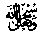
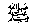
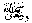
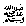

Your Good deeds in Ramadhaan
Ubaadah Ibn Saamitreports that, one day when Ramadhaan had come near, Rasulullah 
Note: In this Hadeeth, we read, about the spirit of competition among the believers, each
one trying to do more good deeds than the other. In our home, I am
greatly very happy at seeing how the women compete with each other, each
one trying to recite more Qur-aan than the others, so that together with
housework, each one reads half to two thirds of the Qur-aan daily. I
mention this only out of a sense of gratitude to Allah  